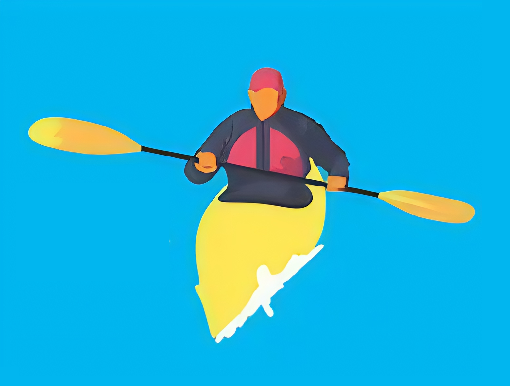

Балансування на човні
Вміння балансувати є ключовим елементом для успішного освоєння каякінгу, оскільки воно безпосередньо впливає на стабільність та контроль над каяком. Баланс дозволяє не тільки уникати перекидання, але й робить веслування більш ефективним і комфортним. Ось кілька причин, чому баланс є таким важливим: Запобігання перевертання: Каяк, особливо в умовах нерівної води (наприклад, на річках або в морі), може легко перевернутися, якщо не контролювати баланс. Вміння підтримувати рівновагу дозволяє зберігати каяк стабільним навіть при зустрічі з хвилями або різкими рухами. Кращий контроль над каяком: Коли ваше тіло розташоване правильно, ви можете ефективніше управляти каяком, роблячи повороти, коригуючи траєкторію руху та змінюючи напрямок. Для цього важливо використовувати корпус і торс разом із руками, щоб передавати енергію в правильному напрямку, а також коригувати баланс під час маневрів. Комфорт під час довготривалих запливів: Уміння зберігати правильну поставу та баланс допомагає зменшити втому, адже це дозволяє рівномірно розподіляти вагу по каяку, знижуючи навантаження на окремі групи м’язів. Це також важливо для збереження енергії під час тривалих поїздок. Безпека: Відмінне почуття балансу допомагає не тільки уникати перевертання, а й швидко реагувати на несподівані зміни в навколишньому середовищі — наприклад, на підвищення хвиль або небажане зіткнення з перешкодами. Розвиток технічних навичок: Балансування сприяє кращому засвоєнню інших важливих навичок, таких як техніка гребка, маневрування та використання різних стилів веслування. Балансування на каяку можна розвивати через тренування, спеціальні вправи та досвід на воді. З часом, як тільки ви відчуєте свій каяк, баланс стане природним і інтуїтивним, що дозволить вам досягти високого рівня майстерності в цьому виді спорту
